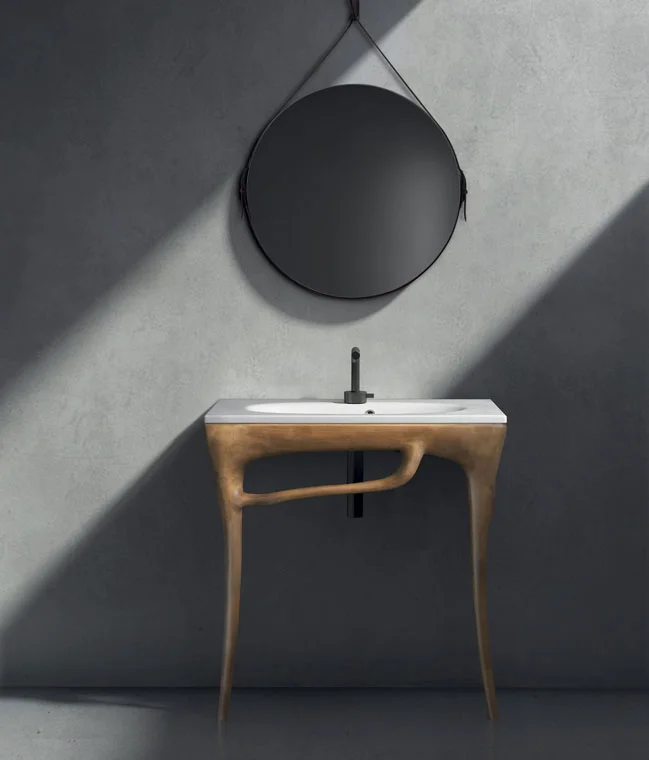

Palatin Group
Сеть салонов европейской плитки, керамогранита и сантехники. Официальный дистрибьютор и авторизованный дилер более 20 европейских брендов.
лет на рынке Казахстана
фабрик Италии, Испании и Германии
Три линейки одной компании
Palatin Hill — премиум, прямой импорт. Зарегистрированная торговая марка, под которой нас знают фабрики Италии и Испании.
Средний сегмент: Европа и проверенные фабрики по разумной цене.
Остатки коллекций со скидкой — через Kaspi.
28 лет — коротко
Первый салон керамической плитки в Алматы.
Официальная дистрибуция Peronda, Porcelanosa, Villeroy & Boch.
Открытие Palatin Hill на Кажымукана 39 и салона в Астане.
Новый сайт и каталог, партнёрская программа для дизайнеров.
Даты таймлайна уточним у клиента
Кунсулу — основатель
«Я сама отбираю каждую коллекцию на фабриках Италии и Испании».
Кунсулу — лицо бренда и главный эксперт компании. Она лично ездит на выставки и фабрики Европы и отвечает за то, что попадает в салоны Palatin.
Только фабрики, с которыми есть прямой контракт
Коллекции, которые проверены в реальных интерьерах
Честная цена и наличие — без «цены по запросу»
Школа керамики
Видео Кунсулу — загружаются по клику, без автоплея.
Обучение для дизайнеров и укладчиков
Курсы по крупному формату, раскладке и выбору сантехники. Оставьте контакт — пригласим на первый поток.